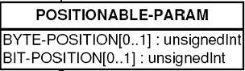
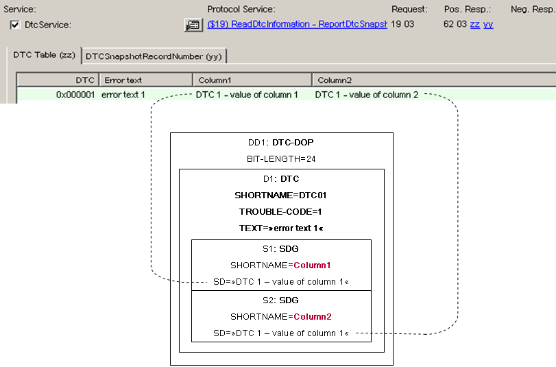
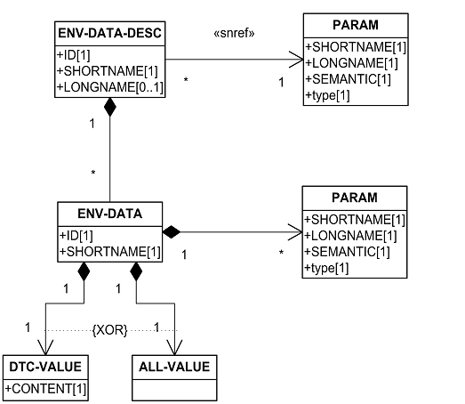
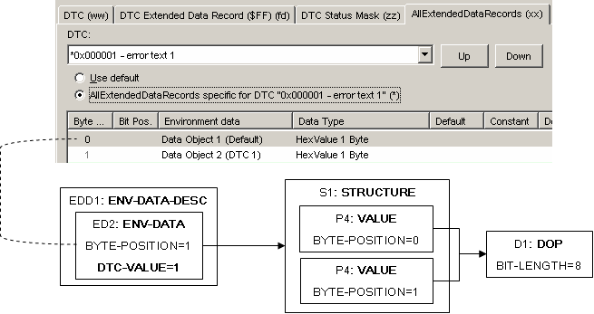
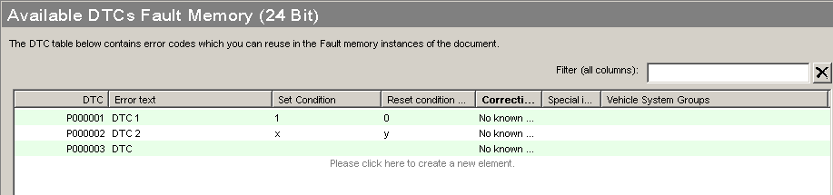
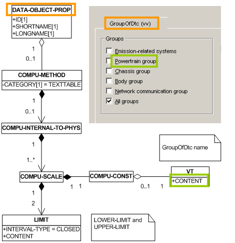
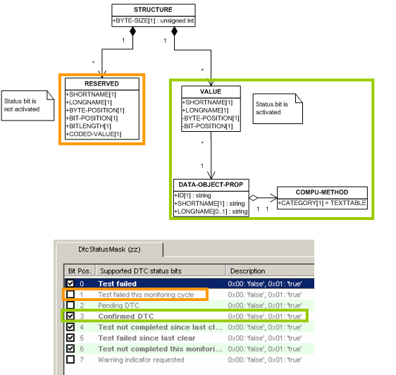
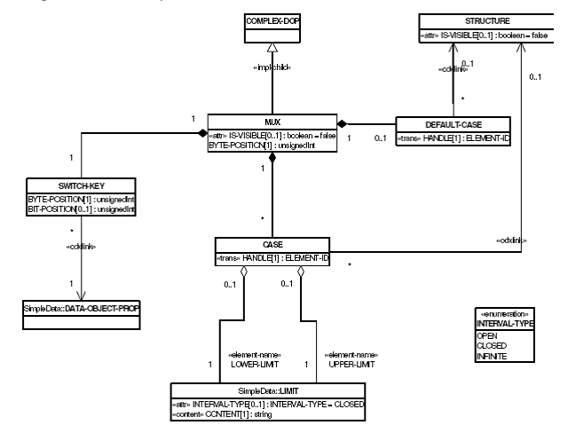

Each data object or bit field is exported as POSITIONABLE-PARAM to ODX.

POSITIONABLE-PARAM
The BIT-POSITION is omitted if it is 0.
In case a dataObject with variable length is detected, the generation of Byte/Bit-Positions is omitted afterwards.
For Bitfields (not used for variant/VSG identification) the generation of duplicate param (used for interpretation of the whole byte) is skipped.
For Bitfields (used for variant identification/VSG identification) the detailed structure is skipped as only the Bitfield as a whole is relevant.
A CANdela data object with default value is exported to a POSITIONED-PARAM VALUE with attribute PHYSICAL-DEFAULT-VALUE. The attribute value is set to the specified default value.
A CANdela data object with constant value is exported to a POSITIONED-PARAM PHYS-CONST. The constant value is stored in the attribute PHYS-CONSTANT-VALUE.
In case the Semantic at the DataObject is set, a SYSTEM PARAM is exported. The type of SYSPARAM is determined from the DataObject-Semantic.
In Odx, the possible PHYSICAL-TYPEs of the SYSTEM-PARAMs depend on the TYPE of SYSPARAM.
With CANdela5.5 a check is implemented that ensures that only the appropriate dataTypes are used.
| Semantic | Allowed DataTypes |
|---|---|
| TesterId, UserId | Encoding: BCD/Unsigned, Quantity: Field |
| Year, Day, Month, Hours, Minutes, Seconds | Encoding: BCD/Unsigned, Quantity: Atom |
Table 28: semantic for DataObjects
Since CANdelaStudio 5.0 SP2 Fields with fix-length, i.e Min-Length == Max-Length are exported with DIAG-CODED-TYPE STANDARD-LENGTH-TYPE. Fields with variable length are exported as DIAG-CODED-TYPE MIN-MAX-LENGTH-TYPE.
For DataObjects used in a request that reference a DataType with a BitMask, a duplicate RESERVED-PARAM is exported at the same position but with inverted BIT-MASK specified.
For Reserved DataObjects in IntelBitFields, that are longer than 8-bit, a DIAG-CODED-TYPE is exported. The IS-HIGH-LOW-BYTE-ORDER is then set to false, so that the DataExtraction is done correctly.
[ODXE-R1100-FaultMem]

Mapping of DTC-Table to DTC-DOP
[ODXE-R1100-ReuseDTCs]
In case the Option "Reuse DTCs if possible" is activated, the ODX-Export compares the currently exported DTC to those exported in the BASE-VARIANT. In case a similar DTC is found in the BASE-VARIANT, the DTC is not exported again but a DTC-REF is generated. The goal is to reduce the size of the ODX-file.
[ODXE-R1000-EnvData]

ENV-DATA-DESC
Environment data are exported to the COMPLEX-DOP ENV-DATA-DESC. No ENV-DATA is exported for empty DTC specific environment data in CANdela. If there are no environment data at all then no ENV-DATA-DESC is exported and no corresponding PARAM is exported. The ENV-DATA ALL-VALUE is only exported when all DTCs have default environment data.

Mapping of ENV-DATA-DESC
The ODX-Export will generate an ECU-SHARED-DATA for the DTC pool. The ECu-SHARED-DATA contains the DTCs from the CANdela DTC pool. ECU-VARIANTs and the BASE-VARIANT will reference the DTCs from the ECU-SHARED-DATA.

DTC pool

Group of DTC
For each CANdela GroupOfDTC Proxy, a DATA-OBJECT-PROP with COMPU-METHOD TextTable is created, where the CANdela-Group are mapped to the COMPU-CONSTs of the generated DATA-OBJECT-PROP.
In case the GroupOfDtc-DataObject supports "single errors", an additional DIAG-SERVICE is created which references the DTC-DOP instead of the Texttable for GroupOfDTC.
With CANdela 6.0 Release it is possible to specify a default-value for the GroupOfDtc DataObject. In case this is specified, a PHYS-CONST-PARAM is generated in ODX.

Export of DTC status bits
For each StatusOfDTC-ProxyComp, a STRUCTURE is created. The Status bits are exported in the following way:
In case the Status-bit is not activated, a RESERVED-PARAM is generated. In case the Status-bit is activated, a VALUE-PARAM is created. This VALUE references then a DOP with COMPU-METHOD TEXTTABLE. The TEXTTABLE contains the COMPU-CONSTs 'true' and 'false'.
With CANdela6.0 it is possible to define a physical default-value for each dataobject of the Bifield. This is then exported as PHYS-CONST-PARAM in ODX.
[ODXE-R220] if...
Since CANdela 5.0 it is possible to use the component 'Mux' with selectors that are not of destiny 'dtc'. These muxes are exported to Odx as MUX. The structure of a MUX resembles the one of an ENV-DATA-Desc. The non-default-cases of the CANdelaMux can be mapped directly to the cases of the OdxMux, whereby the DataObjects of each Mux-Case are exported to a structure.

MUX in ODX
Since CANdela 5.5 in case the CaseContent is empty, the STRUCTURE-REF is omitted for both DEFAULT-CASE and CASES.
Since CANdela 6.0 it is possible to define Ranges for a certain case. These ranges are specified for coded values.This is also possible in ODX (LOWER/UPPER-LIMIT). But here the range is specified for Physical Values. In case the PHYISICAL-TYPE of the MUX-SELECTOR is numerical the cases can be mapped directly. In case the CANdela-Selector is a String, the physical values of the cases might not be the same. This is not allowed in ODX. Here, in case the selector is a String, LOWER and UPPER-LIMIT has to be equal. Another point is that the Physical values for each Case have to be unique. It is not allowed to specify different Cases with the same LOWER/UPPPER-LIMITs.
In case the selector is positioned behind the MUX, the MUX is only exported in case the Contents of the MUX-CASEs all have the same length.
[ODXE-R1100-Bitfields]
A CANdela bit field is exported as POSITIONABLE-PARAM of type VALUE which references a COMPLEX-DOP of type STRUCTURE. If the bit field value has to be interpreted a second POSITIONABLE-PARAM VALUE is exported with the corresponding DOP. More details in next subsection.
[ODXE-R1100-PhysBitfield]
A CANdela bit field is exported to as POSITIONABLE-PARAM VALUE which references a COMPLEX-DOP STRUCTURE. COMPLEX-DOPs have no DIAG-CODED-TYPE and no PHYSICAL-TYPE. Therefore, if the value of the bit field must be physically interpreted a DOP for the STRUCTURE has to be exported and also an additional PARAM which references this DOP and has the same BYTE-POSITION like the STRUCTURE.
This behavior can be influenced by the Bitfield-Attribute "WrapBitfieldInStructure". If it is set to "no", no additional STRUCTURE is generated for the Bitfield, but the PARAMs are exported on top-level.